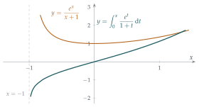

STEP III 2016, Question 3
Read the question before you go on. It is in the STEP Support Programme’s question database: step.maths.org/questions/16-s3-q3
The hook
Differentiation is mechanical: there are rules, and any function built from the usual pieces can be differentiated by applying them. Integration is not. Every student has met integrals that resist every technique, and wondered whether they simply weren’t clever enough. Sometimes the answer is: no one is clever enough, because there is no formula.
This question proves such a thing in a special case. The integral \(\int \frac{e^x}{x+1}\,\mathrm{d}x\) certainly exists, as an area. But it cannot be written in the form (rational function) \(\times\, e^x\), which is the form you would expect from integration by parts. Proving that something is impossible, rather than finding something, is a different and very characteristic kind of mathematics.
Before you start
If \(\int \mathrm{f}(x)e^x\,\mathrm{d}x = \frac{\mathrm{P}}{\mathrm{Q}}e^x + C\), what equation must \(\mathrm{P}\) and \(\mathrm{Q}\) satisfy? (Differentiate the right-hand side.)
Differentiating, \(\dfrac{\mathrm{d}}{\mathrm{d}x}\left(\dfrac{\mathrm{P}}{\mathrm{Q}}e^x\right) = \dfrac{\mathrm{P}'\mathrm{Q} - \mathrm{P}\mathrm{Q}' + \mathrm{P}\mathrm{Q}}{\mathrm{Q}^2}\,e^x\), and this must equal \(\mathrm{f}(x)e^x\). So the whole question is about the polynomial identity \[\mathrm{P}'\mathrm{Q} - \mathrm{P}\mathrm{Q}' + \mathrm{P}\mathrm{Q} = \mathrm{f}\,\mathrm{Q}^2.\] Questions about integrals have become questions about polynomials: their factors and their degrees.
Working it through
Stage 1 The factor \(x + 1\)
With \(\mathrm{f}(x) = \dfrac{x^3 - 2}{(x+1)^2}\), multiply the identity through by \((x+1)^2\): \[(x+1)^2\bigl(\mathrm{P}'\mathrm{Q} - \mathrm{P}\mathrm{Q}' + \mathrm{P}\mathrm{Q}\bigr) = (x^3 - 2)\,\mathrm{Q}^2. \tag{$\dagger$}\]
Put \(x = -1\) in \((\dagger)\). What must happen?
The left-hand side is \(0\) at \(x = -1\). The right-hand side is \((-1 - 2)\,\mathrm{Q}(-1)^2 = -3\,\mathrm{Q}(-1)^2\). So \(\mathrm{Q}(-1) = 0\), and by the factor theorem, \(x + 1\) is a factor of \(\mathrm{Q}\).■
Stage 2 Degrees
Let \(\mathrm{P}\) have degree \(p\) and \(\mathrm{Q}\) have degree \(q\).
In \(\mathrm{P}'\mathrm{Q} - \mathrm{P}\mathrm{Q}' + \mathrm{P}\mathrm{Q}\), which term has the highest degree? Can it be cancelled by the others?
\(\mathrm{P}\mathrm{Q}\) has degree \(p + q\), while \(\mathrm{P}'\mathrm{Q}\) and \(\mathrm{P}\mathrm{Q}'\) have degree at most \(p + q - 1\). So the left-hand side of \((\dagger)\) has degree exactly \(2 + p + q\), and the right-hand side has degree \(3 + 2q\). Equating, \(p = q + 1\).■
Stage 3 Finding \(\mathrm{P}\)
With \(\mathrm{Q} = x + 1\), we have \(\mathrm{Q}' = 1\) and \(\mathrm{P}\) has degree \(2\). Dividing \((\dagger)\) by \((x + 1)^2\): \[\mathrm{P}'(x + 1) - \mathrm{P} + \mathrm{P}(x + 1) = x^3 - 2, \qquad\text{that is,}\qquad (x + 1)\mathrm{P}' + x\mathrm{P} = x^3 - 2.\] Try \(\mathrm{P} = \alpha x^2 + \beta x + \gamma\). The left-hand side is \[(x + 1)(2\alpha x + \beta) + \alpha x^3 + \beta x^2 + \gamma x = \alpha x^3 + (2\alpha + \beta)x^2 + (2\alpha + \beta + \gamma)x + \beta.\] Matching with \(x^3 - 2\): \(\alpha = 1\), \(2\alpha + \beta = 0\) so \(\beta = -2\), and then \(\gamma = 0\); the constant term \(\beta = -2\) is consistent. So \[\mathrm{P}(x) = x^2 - 2x, \qquad \int \frac{x^3 - 2}{(x+1)^2}\,e^x\,\mathrm{d}x = \frac{x^2 - 2x}{x + 1}\,e^x + C. \qed\] (Check by differentiating, if you like; it is a good exercise in the quotient rule.)
Stage 4 An impossibility
Now suppose \(\int \frac{e^x}{x+1}\,\mathrm{d}x = \frac{\mathrm{P}}{\mathrm{Q}}e^x + C\) with \(\mathrm{P}\) and \(\mathrm{Q}\) having no common factor. The identity becomes \[(x + 1)\bigl(\mathrm{P}'\mathrm{Q} - \mathrm{P}\mathrm{Q}' + \mathrm{P}\mathrm{Q}\bigr) = \mathrm{Q}^2.\] As in Stage 1, putting \(x = -1\) shows \(\mathrm{Q}(-1) = 0\). Write \(\mathrm{Q} = (x+1)^k\mathrm{R}\), where \(k \geq 1\) and \(\mathrm{R}(-1) \neq 0\) (take out as many factors of \(x + 1\) as possible).
Substitute \(\mathrm{Q} = (x+1)^k\mathrm{R}\), cancel as many factors of \((x + 1)\) as you can, and then put \(x = -1\). What do you learn about \(\mathrm{P}(-1)\)?
Then \(\mathrm{Q}' = k(x+1)^{k-1}\mathrm{R} + (x+1)^k\mathrm{R}'\), and \[\mathrm{P}'\mathrm{Q} - \mathrm{P}\mathrm{Q}' + \mathrm{P}\mathrm{Q} = (x+1)^{k-1}\Bigl[(x+1)\bigl(\mathrm{P}'\mathrm{R} - \mathrm{P}\mathrm{R}' + \mathrm{P}\mathrm{R}\bigr) - k\mathrm{P}\mathrm{R}\Bigr].\] So the identity reads \((x+1)^k\bigl[(x+1)(\mathrm{P}'\mathrm{R} - \mathrm{P}\mathrm{R}' + \mathrm{P}\mathrm{R}) - k\mathrm{P}\mathrm{R}\bigr] = (x+1)^{2k}\mathrm{R}^2\). Dividing by \((x+1)^k\): \[(x+1)\bigl(\mathrm{P}'\mathrm{R} - \mathrm{P}\mathrm{R}' + \mathrm{P}\mathrm{R}\bigr) - k\mathrm{P}\mathrm{R} = (x+1)^k\mathrm{R}^2.\] At \(x = -1\), since \(k \geq 1\), this gives \(-k\,\mathrm{P}(-1)\mathrm{R}(-1) = 0\). As \(k \neq 0\) and \(\mathrm{R}(-1) \neq 0\), we must have \(\mathrm{P}(-1) = 0\). But then \(x + 1\) divides both \(\mathrm{P}\) and \(\mathrm{Q}\), contradicting the assumption that they have no common factor. So no such \(\mathrm{P}\) and \(\mathrm{Q}\) exist.■
Looking back
Translate into algebra. “Can this be integrated in this form?” became “does this polynomial identity have a solution?”
Evaluate at a special point. Putting \(x = -1\) extracted information about factors, three times.
Proof by contradiction, using lowest terms. As with \(\sqrt2\) in Section 1.3, assuming the fraction is in lowest terms and finding a common factor gave the contradiction.
What’s really going on
There is a simple picture behind part (ii). The integrand \(\frac{e^x}{x+1}\) has a simple pole at \(x = -1\): near there it behaves like \(\frac{e^{-1}}{x+1}\). Integrating \(\frac{1}{x+1}\) gives \(\ln|x+1|\), so the antiderivative should behave like \(e^{-1}\ln|x+1|\) near \(-1\), growing to \(-\infty\) logarithmically (Figure 4.6.1). But a rational function times \(e^x\) can only blow up like a power \((x+1)^{-k}\), and its derivative then has a pole of order \(k + 1 \geq 2\), never a simple pole. Logarithmic behaviour cannot be produced by rational functions; the algebra in Stage 4 is a rigorous version of this observation. In part (i), by contrast, the integrand has a double pole, which is exactly what the derivative of something with a simple pole looks like, so a rational answer was possible.

Liouville and the Risch algorithm
In the 1830s Joseph Liouville developed a theory of which integrals can be expressed in terms of elementary functions (those built from polynomials, exponentials, logarithms, roots and trigonometric functions by the usual operations). One of his results says that \(\int \mathrm{f}(x)e^{\mathrm{g}(x)}\,\mathrm{d}x\), with \(\mathrm{f}\) and \(\mathrm{g}\) rational and \(\mathrm{g}\) not constant, is elementary only if it equals \(\mathrm{R}(x)e^{\mathrm{g}(x)}\) (plus a constant) for some rational \(\mathrm{R}\). (The condition on \(\mathrm{g}\) matters: with \(\mathrm{g} = 0\) and \(\mathrm{f}(x) = \frac1x\) the integral is \(\ln|x|\), which is elementary but not rational.) So this question, which rules out the rational form, actually proves that \(\int \frac{e^x}{x+1}\,\mathrm{d}x\) is not elementary at all. Versions of the same theorem show that \(\int e^{-x^2}\,\mathrm{d}x\) and \(\int \frac{\sin x}{x}\,\mathrm{d}x\) are not elementary. In 1969 Robert Risch turned Liouville’s ideas into an algorithm that decides, for a large class of functions, whether an elementary integral exists and finds it if it does. Versions of it run inside computer algebra systems.
Special functions
When an integral has no elementary form, mathematicians give it a name and study it as a new function, just as we did with the Lambert W function in Section 3.9. The integral here is essentially the exponential integral \(\mathrm{Ei}(x)\), which appears in heat flow and in the logarithmic integral \(\mathrm{li}(x) = \mathrm{Ei}(\ln x)\), the best simple approximation to the number of primes up to \(x\) (Section 1.2). For \(x < 0\) it is \(\int_{-\infty}^x \frac{e^t}{t}\,\mathrm{d}t\). For \(x > 0\) that integral runs through the infinite spike at \(t = 0\), so \(\mathrm{Ei}(x)\) is defined by cutting out a small interval \((-\varepsilon, \varepsilon)\) around the spike and letting \(\varepsilon \to 0\): the Cauchy principal value.
The thinking skill
To show something cannot be done, assume it can, translate the assumption into precise algebra, and derive a contradiction.
The hard part is the translation: finding a precise statement of what “can be done” means. Here it meant “there are polynomials \(\mathrm{P}\), \(\mathrm{Q}\) with no common factor satisfying this identity”. Many of the deepest results in mathematics are impossibility proofs of this kind.
Try this next
Two that work. Show that \(\displaystyle\int \frac{x e^x}{(x+1)^2}\,\mathrm{d}x = \frac{e^x}{x+1} + C\) and \(\displaystyle\int \frac{(x^2 + 1)e^x}{(x+1)^2}\,\mathrm{d}x = \frac{x - 1}{x + 1}\,e^x + C\).
The Gaussian. Show that there is no polynomial \(\mathrm{P}\) with \(\displaystyle\int e^{-x^2}\,\mathrm{d}x = \mathrm{P}(x)e^{-x^2} + C\). (Hint: differentiate and compare degrees.)
Another pole. Adapt the argument of part (ii) to show that \(\displaystyle\int \frac{e^x}{x}\,\mathrm{d}x\) is not of the form \(\frac{\mathrm{P}(x)}{\mathrm{Q}(x)}e^x + C\).
When is it possible? Suppose \(\mathrm{f}\) is a polynomial and \(\displaystyle\int \frac{\mathrm{f}(x)}{(x+1)^2}\,e^x\,\mathrm{d}x = \frac{\mathrm{P}(x)}{x+1}\,e^x + C\) for some polynomial \(\mathrm{P}\). Show that \((x+1)\mathrm{P}' + x\mathrm{P} = \mathrm{f}\), and by evaluating this and its derivative at \(x = -1\), show that \(\mathrm{f}(-1) + \mathrm{f}'(-1) = 0\). Check that this condition holds for \(\mathrm{f}(x) = x^3 - 2\) and for the examples in exercise 1. harder Can you show that the condition is also sufficient?
Further reading
Brian Conrad, “Impossibility theorems for elementary integration”. Freely available lecture notes explaining Liouville’s theorem with examples.
Elena Anne Marchisotto & Gholam-Ali Zakeri, “An invitation to integration in finite terms”, The College Mathematics Journal 25 (1994). A gentle introduction to Liouville’s theory.
Manuel Bronstein, Symbolic Integration I (Springer). How computer algebra systems actually integrate. Advanced.